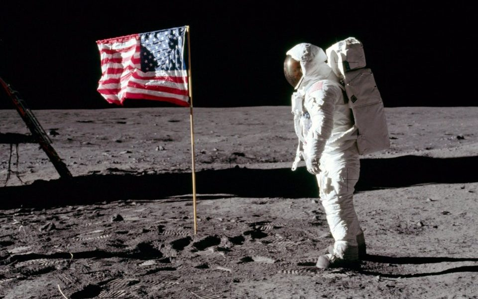

PERSONAL RESEARCH · VERSION 1
Last 3 months I didn’t post here. But I wasn’t doing nothing.
I was working on an idea that kept coming back to me. So I actually wrote it properly this time.
PERSONAL RESEARCH · VERSION 1
Last 3 months I didn’t post here. But I wasn’t doing nothing.
I was working on an idea that kept coming back to me. So I actually wrote it properly this time.
I didn’t post anything here for 3 months. Not because I had nothing to say but because I kept waiting to feel “READY”!!
Richard Feynman has been dead for years, but somehow he still affects how I think, how I study, and why I even care about physics and math in the first place.
We always dreamed of space as humanity’s playground. The Moon, Mars, the star. they were supposed to be ours, all of ours. But every mission screams one ugly truth: America first. The flags planted on the Moon? American. The plaques? Mostly American names. China and India? National logos. Nobody cares about “humankind” in practice. Only in fancy speeches.

I finally decided to start this — my little corner of the internet. No social media, no followers, no notifications. Just me and my thoughts.